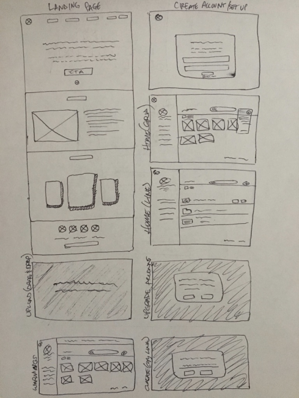
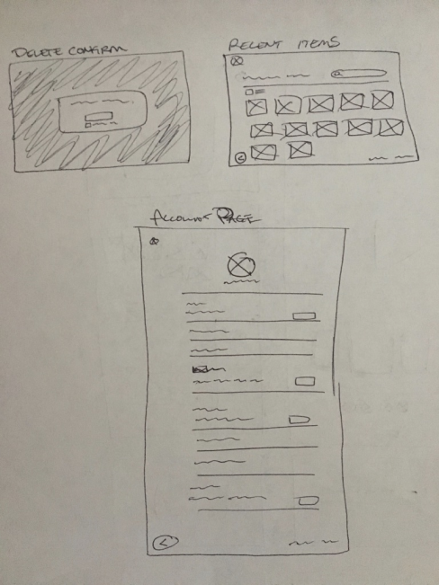
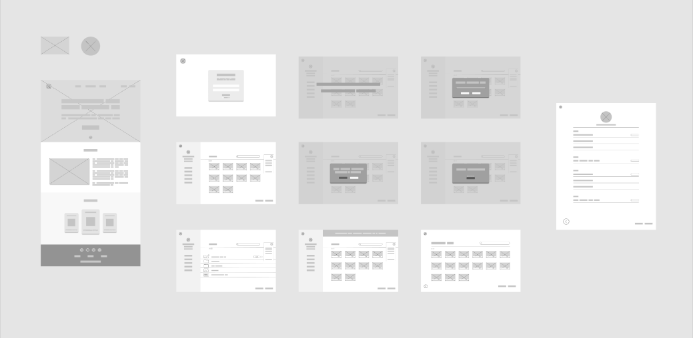
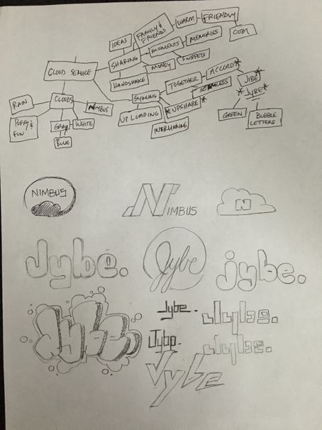

SPECS
Role
- UX Designer
- Visual Designer
- Brand & Identity
Deliverables
- User Surveys
- Personas
- Competitive Analysis
- Concept & Identity
- User Stories & Flows
- Wireframes
- Low & High Fidelity Mockups
- User Testing
- Prototype
Tools
- Figma
- Photoshop
- Illustrator
- Whimsical
Duration
4 weeks
Problem/Solution
In a time where data is multiplying exponentially we are in need of more options to store it. We have cloud services provided by major corporations, but there is still room to play.
Surprisingly, users are looking for something more simplistic. They wanted syncing to be flawless so only one application is needed to manage opposed to several. The majority of users save their life moments and other important documents within the cloud.
Jybe is a cloud application that allows seamless syncing to access information whether by phone or desktop. It also promotes easy sharing of life moments or important documents in a fast way without sacrificing it’s simplicity.

Discovery & Research
- 94% use their cloud service app for personal use >
- 83% use cloud service for work related endeavors >
- 89% user under the age of 45 use cloud services >
- 73% of users are considered young professionals >
- 78% of all users upload videos >
- 73% upload images and word/pdfs/excel documents >
- 55% of users heard of Dropbox and use this cloud service
With this information I geared Jybe toward young professionals. Since the majority of individuals used cloud services for personal use I geared this to be friend and family oriented. There still needed to be a way to aim it toward work related information too so finding the right vibe proved itself difficult.
I also looked for particular ways to mimic Dropbox in it’s design to help the user feel more at ease. I wanted the user to feel Jybe was familiar, yet still dealing with a totally different application with different features.
I also knew to compete with larger companies I needed to provide larger storage for cheaper pricing since the majority of users were uploading videos.
As I was given this information I was able to perform a competitive analysis of competing businesses such as Google Drive, Dropbox, and Evernote.
I also found that the onboarding process for 2 out of the 3 I researched were quite extensive. If simplicity were key in using this app and having it perform well as an MVP then I knew I needed to make it a quick and easy onboarding experience as well. This definitely influenced the login process by simply providing a username and email.
To embody the information received I succeeded to gain interesting motivations and frustations from users. Meet Benjamin Parker and Sarah Smith.
View user personasUser Stories
To embody the information received I succeeded to gain interesting motivations and frustations from users. Meet Benjamin Parker and Sarah Smith.
View user storiesSite Maps & User Flows
As I created my user stories I went on to do user flows to help think through the process of the user stories created. This definitely helped me think through logically what the user would experience before designing.
View site maps View user flow
IA & Wireframing
Then onto designing my first sketch on the design concept.
Overall I already had an initial thought of what I believed the web app should look like so as I sketched out these screens overall I designed a wireframe digitally as well in order to put them in front of the user to test out. First I created the wireframe digitally then I designed a low-fidelity mockup.
  Branding & Style Guide
I thought initially I knew what I was going to name this application. Since it was a cloud app I wanted to name it something more related to clouds like Nimbus, but through a mind-mapping exercise I found this was not the case.
Overall all of the user testing was a very good experience with the initial 3 testers pointing out the largest flaws.
The majority of these changes and iterations that were needed were based on spacing inconsistencies, text resizing, or placing items in different spots because it made more sense logically to the user. Here are some of the changes made:
Conclusion
Overall, this experience was incredible. Going into the project with the client not knowing a lot of their target audience or important functionalities gave me encouragement to see UX/UI design is not something to skip if you want a truly successful app.
Initially I was a bit nervous to start a project where the client essentially said, “Here is what we think we want, but we need you to confirm this is the right direction”. I was absolutely blown away by what I learned from users using cloud service platforms.
Some of the things that surprised me were that the majority of people were not stingy when it came to purchasing a cloud application. If that meant that their files were safe, secure, and they had plenty of space to store data then they were willing to pay a premium. In fact I believe this had some correlation with the fact that the majority of users used their cloud services for personal use and that in large, video was the main data type to save. Again, this was because of personal memories or experiences from follow-up.
This also leads to the other point that surprised me is that the majority of users did not use a cloud service in order to store business documents or use it for work, but for personal use. They wanted a laptop/mobile app that synced perfectly. This is because they wanted control of when, where, and how they were going to organize or share their data. Work was still important but it was not the primary priority it was second.
When my prototypes were tested to make a product very appealing to a young professional, I believe the simplistic design, color scheme, and straight forward instruction did it all for them. The users who tested the prototype were able to perform primary and secondary tasks flawlessly the second round. The only reason why some may have had an issue was because they may have been distracted during their time of the testing unfortunately.
If I were to go back and improve on my workflow it would have to be putting the research more in front of me. Although I did use my research throughout I know there could have been tiny tweaks to the design to accommodate small preferences or produce a tighter MVP. If I had more time I would have loved to put a more full fledged prototype with animations that could draw the persons/users attention at a much greater level and create a more “real” experience.
Creating Jybe was a blast and I was grateful to have taken part in this particular project!
Up Next...
Graphic Design Portfolio
Many of the other projects and companies I’ve designed for with a mix of ads, branding, videography, and wireframing.
 View in Dropbox
View in Dropbox